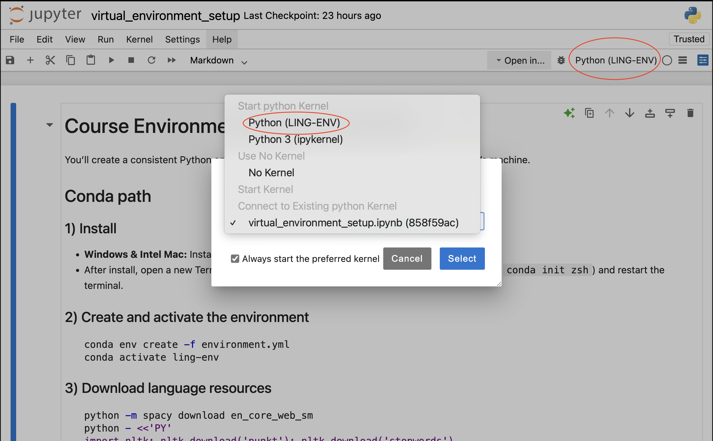

Course Environment Setup (LING-ENV)#
You’ll create a consistent Python environment so every notebook runs the same on everyone’s machine.
Conda path#
1) Install#
Windows & Mac: Install Anaconda.
After installation, open a new Terminal/Command Prompt. If conda isn’t recognized, run
conda init zsh(macOS) orconda init cmd.exe(Windows), then reopen the terminal.
2) Create and activate the environment#
Download the virtual environment bundle
Go to the virtual_environment folder (where environment.yml lives):
cd path/to/your/virtual_environment_setup_directory # Revise the path
conda env create -f environment.yml # Create the environment
conda activate ling-env # Activate the environment
3) Download language resources#
python -m spacy download en_core_web_sm
python -c "import nltk; nltk.download('punkt'); nltk.download('stopwords'); nltk.download('wordnet')"
4) Register the Jupyter kernel#
python -m ipykernel install --user --name ling-env --display-name "Python (LING-ENV)"
5) Launch Jupyter#
# Start JupyterLab or classic Notebook:
jupyter lab
# or
jupyter notebook
6) Switch Kernel#
In each notebook, choose Kernel → Change/Select Kernel → Python (LING-ENV).

5) Quick verification#
Run the following code when you are in LING-ENV.
import sys, os, importlib, spacy, nltk
env = os.environ.get("CONDA_DEFAULT_ENV") or os.path.basename(sys.prefix)
print("Python:", sys.version.split()[0])
print("Env:", env)
print("Kernel:", sys.executable)
for name in ("numpy","pandas","sklearn","matplotlib","seaborn",
"nltk","spacy","wordcloud","tqdm","regex","ipykernel","jupyterlab"):
try:
m = importlib.import_module(name)
print(f"{name:12s}", getattr(m, "__version__", "?"))
except Exception as e:
raise SystemExit(f"❌ Missing or broken package '{name}': {e}")
try:
spacy.load("en_core_web_sm"); print("spaCy model: en_core_web_sm ✅")
except Exception as e:
raise SystemExit(f"❌ Missing spaCy model: {e}")
for pkg, where in [("punkt","tokenizers/punkt"), ("stopwords","corpora/stopwords")]:
try: nltk.data.find(where); print(f"NLTK data: {pkg} ✅")
except LookupError: raise SystemExit(f"❌ Missing NLTK data '{pkg}'. See setup instructions.")
print("✅ Environment check passed.")
Python: 3.11.13
Env: base
Kernel: /opt/anaconda3/envs/ling-env/bin/python
numpy 1.26.4
pandas 2.3.3
sklearn 1.7.2
matplotlib 3.10.6
seaborn 0.13.2
nltk 3.9.2
spacy 3.8.7
wordcloud 1.9.4
tqdm 4.67.1
regex 2.5.162
ipykernel 6.30.1
jupyterlab 4.4.9
spaCy model: en_core_web_sm ✅
NLTK data: punkt ✅
NLTK data: stopwords ✅
✅ Environment check passed.